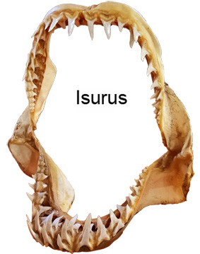
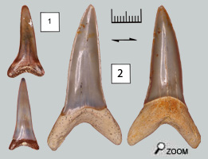
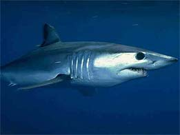

|
Un requin puissant...

Les dents d’Isurus se distinguent des autres par leur grande taille et l’absence de denticules  latéraux.
Sur les mâchoires, les dents sont assez uniformes. Seules les deux premières dents de chaque côté des symphyses mandibulaires sont plus longues et plus minces. Il est donc difficile de replacer les dents trouvées à leur position sur la mâchoire. Assez récemment on a séparé l'espèce Hastalis dans un genre différent de celui d'Isurus. Hastalis est maintenant installé dans le genre Cosmopolitodus.
Isurus Desori

Dents supérieures à profil en «S» bien marqué. Tranchant bien individualisé descendant très bas.
Isurus retroflexus
Dents trapues. Couronne inclinée vers l'intérieur de la gueule. Racine massive à forte protubérance interne ayant souvent un bourrelet basal. Peu communes… La dentition complète de cette espèce n'est pas connue. Les dents sont si puissantes qu'on peut soupçonner que ces requins devaient s'attaquer à des gros poissons ou bien des vertébrés osseux. On pense que ce genre est l'ancêtre direct de l'actuel Isurus Paucus.
Ecologie des requins Makos actuels
Ce sont des requins pélagiques de répartition mondiale. On trouve Isurus dans toutes les eaux tropicales et tempérées. On le rencontre dans les zones froides jusqu'à 5°C, mais aussi à différentes profondeurs: de la surface, à des eaux relativement profondes où l'eau est plus fraîche. On a trouvé Isurus à des profondeurs de plus de 700 m. 
On sait peu de choses sur les habitudes d'Isurus sauf que c'est un requin solitaire. C'est un grand voyageur qui peut parcourir des milliers de km. La queue a pris la forme quasi symétrique des poissons évolués (à nageoire rayonnante), plus performante pour la nage rapide que celle des requins à queue basse et dissymétrique. C'est donc un requin rapide, agressif et tonique, connu pour ses sauts en dehors de l'eau.
Le requin Mako s'attaque aux poissons pélagiques rapides tels que des espadons, thons, d'autres requins ainsi qu'aux calamars. Les Isurus actuels s'intéressent peu aux tortues ou bien aux mammifères marins.
|